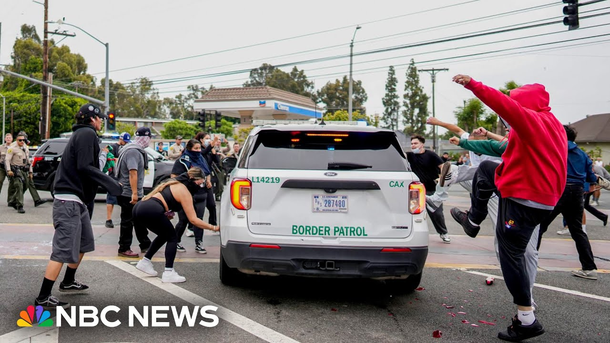

【洛杉矶移民执法行动引发抗议局势紧张升级】
Summary: Growing tensions over mass deportations in Los Angeles led to protests and clashes between authorities and demonstrators, with arrests reported in multiple cities including New York. Federal agencies are monitoring the situation, and law enforcement remains heavily deployed.
摘要： 洛杉矶大规模驱逐行动引发紧张局势，抗议者与当局发生冲突，包括纽约在内的多个城市出现逮捕事件。联邦机构正在监控局势，执法部门仍保持高度戒备。

⏱️ Estimated Reading Time: 2 min
📚 六级生词 📚 雅思生词 📚 托福生词 📚 GRE生词 📚 视频里的生词
Growing tensions over mass deportations in Los Angeles.
洛杉矶大规模驱逐行动引发紧张局势。
This was a scene in Paramount, California today when officers responded to a huge gathering as protesters took to the streets to demonstrate against federal immigration operations.
这是今天加州派拉蒙的一幕，警方应对大规模集会，抗议者走上街头反对联邦移民执法行动。
Border Patrol says several arrests were made and the White House says it is monitoring the situation.
边境巡逻队表示已进行多次逮捕，白宫称正在监控局势。
At least 30 officers wearing riot gear lined up against the protesters.
至少30名身穿防暴装备的警察列队对抗抗议者。
It isn't immediately clear which agency these officers work for.
目前尚不清楚这些警察隶属于哪个机构。
Homeland Security Secretary Christy Gnome says ICE will quote continue to follow the law.
国土安全部部长克里斯蒂·诺姆表示，ICE将“继续依法行事”。
And it wasn't just LA.
这不仅仅是洛杉矶的情况。
We also saw another standoff between protesters and authorities in New York City.
我们还看到纽约市抗议者与当局之间的另一场对峙。
Arrests were made there as well.
那里也发生了逮捕事件。
Today's news comes one day after dozens of people were taken into custody across at least three locations in LA.
今天的新闻发生在洛杉矶至少三个地点数十人被拘留的一天后。
Our Steve Patterson is in Paramount, California for us.
我们的史蒂夫·帕特森正在加州派拉蒙为我们报道。
Steve, good evening.
史蒂夫，晚上好。
What are you seeing there now, Jose?
何塞，你现在在那里看到了什么？
This all started this morning, apparently across the street from a Home Depot, but the tension continues to this very moment.
这一切显然是从今天早上在家得宝对面开始的，但紧张局势一直持续到现在。
I'll step off and show you behind me.
我会退后一步，让你们看看我身后的情况。
You can see LA County Sheriff's Department in full riot gear.
你们可以看到洛杉矶县警署全副防暴装备。
We've seen flashbangs be deployed.
我们看到闪光弹被投掷。
We know tear gas canisters have gone up.
我们知道催泪瓦斯罐已经发射。
We've seen debris in the streets.
我们看到街上有碎片。
We know the FBI says they are looking for several people that they say threw rocket vehicles conducting operations.
我们知道FBI表示正在寻找几名据称投掷火箭车辆以干扰行动的人。
This of course follows that day of tension raids across LA and LA County.
这当然是在洛杉矶和洛杉矶县当天紧张突袭行动之后发生的。
Specifically, dozens of arrests being made.
具体来说，数十人被逮捕。
We don't know how many arrests or injuries in this police action, but obviously the tension not dying down anytime soon.
我们不知道这次警方行动中有多少逮捕或受伤，但显然紧张局势不会很快平息。
How?
怎么样？